先看懂：水在濾水器裡怎麼走
10 款外形不同，水路的原理相同。看懂這張示意圖，再看每款的流體圖就容易了。
共同的水路：由外往內穿過濾材
示意圖是簡化的，不是任何一款的實際尺寸。水走的順序：
- 進口：冷卻液從進水接頭進來，經頭座（或歧管）裡的流道轉往杯內。
- 未過濾的水充滿杯壁和濾心之間的環隙，從四周包住濾心。這一側壓力最高。
- 穿過濾材：水由外往內穿過 PES 0.2 µm 濾材，顆粒留在濾材外面。乾淨濾心時整機壓損大部分花在這一層；濾材越髒，這一層的壓差越大。
- 濾後的水在濾心的中心管匯集往上，經 222 插頭（O-ring 密封）回到頭座；插頭把濾前和濾後隔開。
- 出口：從出水接頭離開，回到冷卻迴路。
- 紫線：未過濾的水
- 綠線：濾後的水
- 虛線框：濾材
有三種例外：P02、P10 用 C48 膠囊，膠囊本身就是濾殼，水從膠囊一端的插管進、另一端出；P05 的 DOE 濾心用上下刀口壓平墊，把濾前和濾後隔開；P08 沒有壓力殼，濾心吊在開放儲液槽裡，靠幫浦吸力把水拉過濾材，所以沿途壓力是負的。
看壽命用差壓量測的幾款，量的就是②和④之間的壓力差：濾材越髒，差壓越大，到設定值就換濾心。
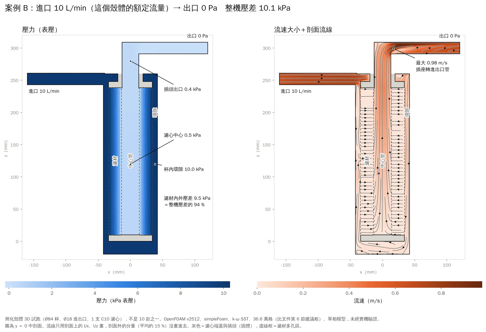
怎麼看流體圖
- 每張圖是同一個剖面的兩個面板：左邊藍色是壓力，顏色越深壓力越高；右邊橘色是流速，越深流得越快，細黑線是流線（水在這個剖面上走的路徑）。
- 灰色是濾心端蓋和插頭（實體），虛線框是濾材。流線碰到虛線框會從「往下」轉成「往中心」，表示水正在由外往內穿過濾材。
- 壓力都是表壓，出口＝0。左圖從進口到出口一路變淺，顏色在虛線框兩側變化最大，就是壓力大多花在濾材上。P08 是幫浦吸入側，壓力相對槽內液面，是負的。
- 「額定」是每款的設計流量，也就是正常運轉。「120 psi」是進口 8.27 bar 直通大氣的極限情況，用來找流道最窄、最容易空化的地方；圖上的斜線區是絕對壓力低於水的蒸氣壓、水可能汽化（空化）的位置。120 psi 已超過最高操作壓力 2.5 bar，只當參考。
- 這張樣板圖的單位是 kPa（100 kPa＝1 bar），10 款的圖都用 bar。流體圖的藍、橘只代表壓力和流速，跟上面示意圖的紫（未過濾）、綠（濾後）是兩回事。
- 點任何一張圖都可以放大看。
五個面向對照
換濾心、進出口、安裝、看壽命、濾心：每一欄 10 款都不重複。
| 款式 | 換濾心 | 進出口 | 安裝 | 看壽命 | 濾心 | 主材料 | 額定流量 L/min | 手算乾淨壓損 bar，20 °C 水／10 °C PG25 | CFD 額定壓損 bar，20 °C 水 | 外形 W×D×H mm | 乾重 |
|---|---|---|---|---|---|---|---|---|---|---|---|
| P01卡口快換型Rev B | ¼ 圈卡口＋鎖扣滑塊 | G¾ 內牙，同軸對穿 | 頭座壁掛 | 磁性差壓指示器（紅色記憶） | C10 10 吋 | PP-GF30 | 10 | 0.122／0.335 | 0.123Rev A 0.164 | 164×144×365 | 1.5 kg |
| P02免開殼膠囊型 | 免開殼，膠囊插入自閉閥座 | Ø12 快插／UQD04 | DIN 軌／0U 立柱 | 累積流量計＋日期標籤 | C48 膠囊 | PPSU | 4 | 0.218／0.479 | 0.154不含止回閥芯、流量計 | 135×82×269 | 0.43 kg |
| P03雙聯不停機型Rev B | 雙杯旋入＋旋轉閥切換 | G1 活接，尾件可換 | SS316 落地框架 | 膜片差壓錶 0–1 bar | C10 10 吋 × 2 | PVDF／PP-GF30 | 15 | 0.219／0.539 | 0.197 | 320×266×855 | 13.4 kg |
| P04頂開蓋型Rev B | 頂部手輪蓋 ⅓ 圈＋排氣閥連鎖 | 底部 G¾ 外牙活接 | 落地三腳座 | 進口壓力錶＋刻度環 | C10 10 吋 | PP-GF30／PPSU 蓋 | 20 | 0.272／0.698 | 0.255 | 349×302×526 | 3.5 kg |
| P05衛生卡箍型 | DN80 衛生卡箍 | DN25 衛生卡箍 | 管段抱箍＋C 型鋼 | 差壓開關乾接點 | C10 DOE | PVDF | 20 | 0.22／0.65 | 0.208 | 260×150×403 | 3.96 kg |
| P06機架抽屜型Rev B | 鉸鏈門蓋＋偏心凸輪扳把 | 前面板 UQD08 | 19 吋 3U 抽屜 | 電子差壓＋流量＋NFC | C10 臥裝 | PPSU | 15 | 0.272／0.595 | 0.286Rev A 0.315 | 483×584×133 | 9.2 kg |
| P07反洗延壽型 | 活接旋環（杯體不轉） | 19 mm 倒鉤＋G½ 排污 | 壁掛板 | 反洗前後差壓恢復量 | C10 10 吋 | PP-GF30／PPS-GF40 | 10 | 0.152／0.369 | 0.163 | 238×216×599 | 6.5 kg |
| P08槽內沉入型 | 無壓力殼，鋼絲提把 | 槽頂 G¾ 外牙出口 | 儲液槽頂 | 複合真空錶 | C10 吊掛 | PP-H | 15 | 0.175／0.494 | 0.162液面到出口頸 | 158×182×489 | 1.33 kg |
| P09面板模組型 | 3 個肘節扣 | G1½ 活接，尾件可換 | 預裝壁掛背板 | 浮子流量計（70 % 換） | CMG 10 吋 | PP-GF30／PP-H | 10 | 0.19／0.40 | 0.161 | 590×161×698 | 7.1 kg |
| P10扁平並聯型Rev B | 4 支膠囊，各一把凸輪扳把 | G½ 內牙，可串接 | 扁平盒 85.5 mm 高 | 差壓錶＋每支轉子視窗 | C48 × 4 | PPSU | 16 | 0.228／0.498 | 0.223Rev A 0.358 | 319×355×85.5 | 4.49 kg |
手算乾淨壓損為額定流量下接頭到接頭的計算值；10 °C PG25（丙二醇 25 %）是黏度最高的冷啟動情況。CFD 額定壓損是整機 CFD（20 °C 水）的結果：P02 不含止回閥芯和流量計，P08 是槽內液面到出口頸。CMG 與 C48 濾心耐溫 40 °C，用在 P02、P03、P09、P10 時只裝在供水側。標 Rev B 的 5 款是 CFD 之後修改的版本。
10 張設計圖紙
每款：外觀、剖面、爆炸圖、關鍵機構、水怎麼流（附 CFD 流體圖）、規格與組立圖。
壁掛 · C10 · 10 L/min · Rev B
卡口快換型
杯體對準缺口上推、轉 86°，三組斜坡把杯體拉入，彈簧滑塊自動鎖住；有壓力時推不動杯體，不會帶壓誤開。

- 換濾心
- ¼ 圈三凸耳卡口加杯側彈簧鎖扣滑塊；徑向 O-ring 密封，不靠鎖緊扭力
- 進出口
- 頭座同軸對穿 G¾ 內牙（ISO 228-1），EPDM 平墊端面密封
- 安裝
- 頭座一體壁掛支架，4 × ⌀6.6
- 看壽命
- 磁性活塞差壓指示器，綠／黃／紅（0.35／0.7 bar）；紅色機械記憶，按鈕復歸


水怎麼流
Rev B · 額定 10 L/min · CFD 整機壓損 0.123 bar（Rev A 0.164）
- 未過濾的水進口 G¾ → Ø20 水平孔頭座 −X 側，G¾ 內牙接管0.123
- 垂直風道 16 × 10直角轉往下，衝進頭座底部 Ø84 的環形集水腔
- 杯內環隙水沿杯壁往下，從四周包住濾心0.108
- 穿過濾材濾材（外 → 內）C10 中空纖維 PES 0.2 µm，整機壓損大部分在這一層0.108 → 0.007
- 濾後的水中心管 → 222 插頭濾後水在中心管往上，經插頭進頭座插座 Ø43.50.005
- 出水上行孔 Ø20 → 出口 G¾轉進水平孔，從 +X 側出去，和進口同軸對穿0.001
量壽命：磁性差壓指示器的高壓口在進水側、低壓口接濾後，壓差到 0.7 bar 紅旗跳出並記憶。
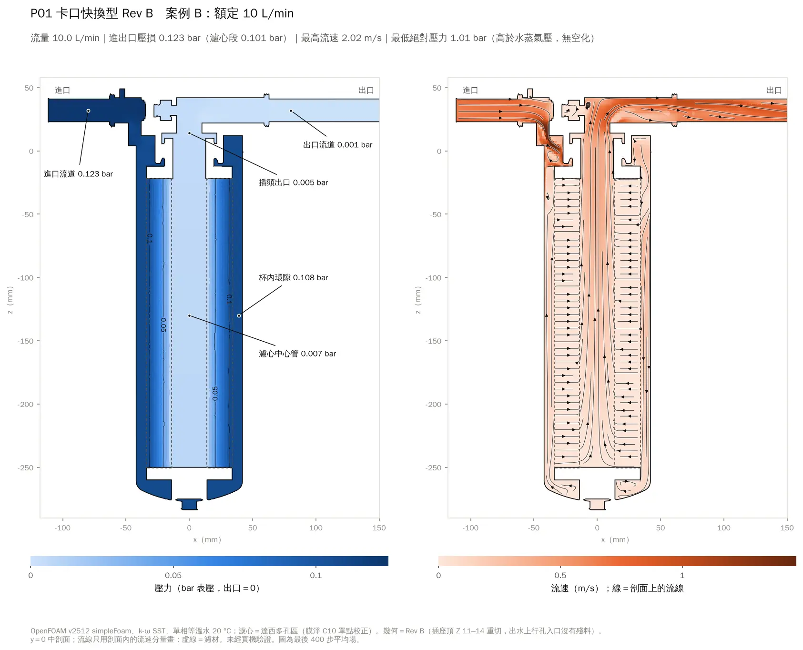
- 額定壓損（CFD）
- 0.123 bar手算 0.122；Rev A 0.164
- 濾心段
- 0.101 bar佔整機 82 %
- 最高流速
- 2.0 m/s進水風道出口
- 120 psi 直通
- 164 L/min平均場沒有空化
CFD 看到的重點
- 壓力差幾乎都在濾材：杯內環隙 0.108 bar，穿過濾材到中心管剩 0.007 bar；右圖的流線橫穿虛線框（濾材）後在中心管匯集往上。
- 濾心以外的流道只吃約 0.02 bar：進口到環隙 0.016、中心管到出口 0.006 bar。
- 120 psi 直通時，限住流量的是進口垂直風道（平均約 17 m/s）；額定流量時這一段只有 0.016 bar，不是問題。
更多流體圖
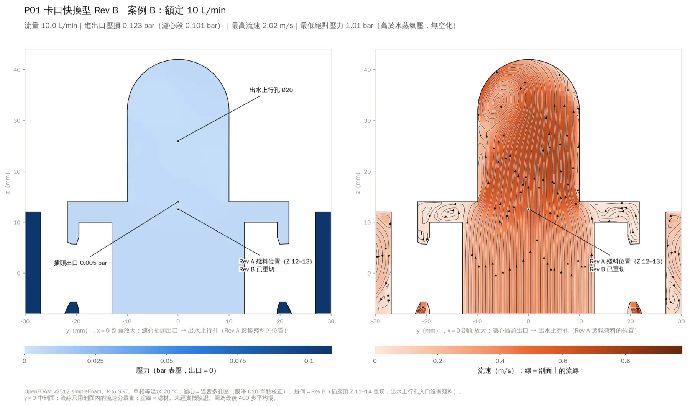
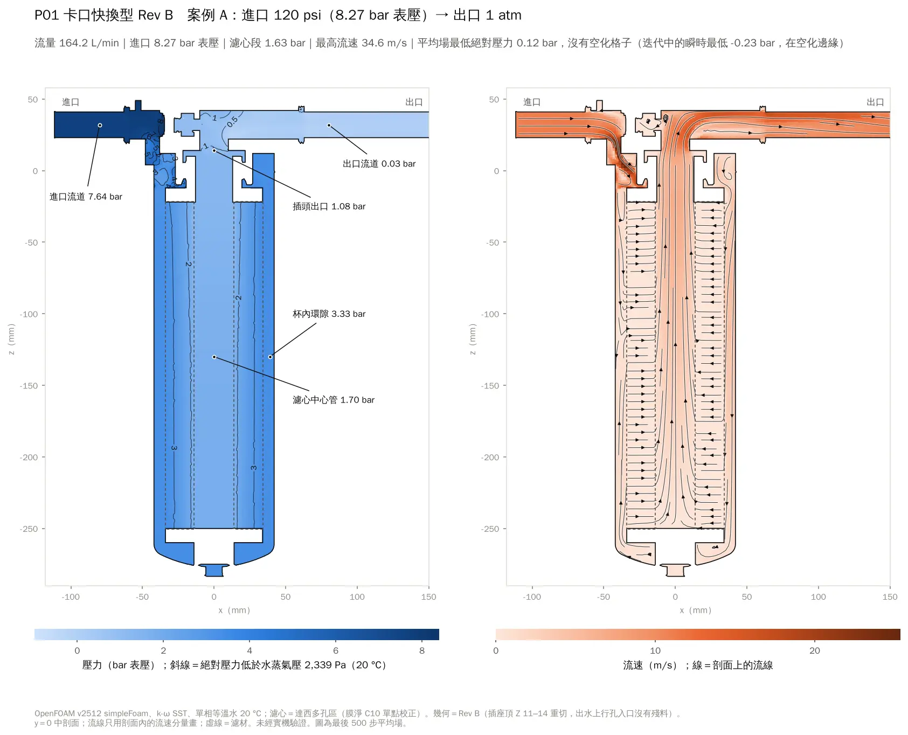
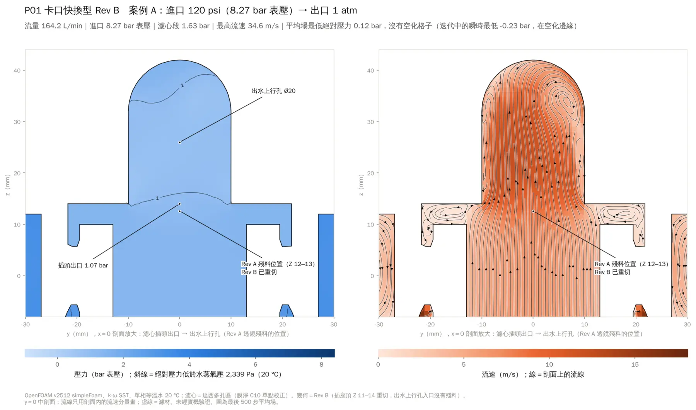
Rev B（2026-11-01）：切掉出水孔殘料
CFD 抽水路時發現 Rev A 的出水上行孔入口有一片約 1 mm 厚的殘料，擋住約 74 % 的孔口。Rev B 在出水凸台之後加一刀重切插座頂（z 11–14 mm）。額定壓損 0.164 → 0.123 bar；120 psi 流量 107 → 164 L/min，出水孔約 100 mm³ 的空化區消失。
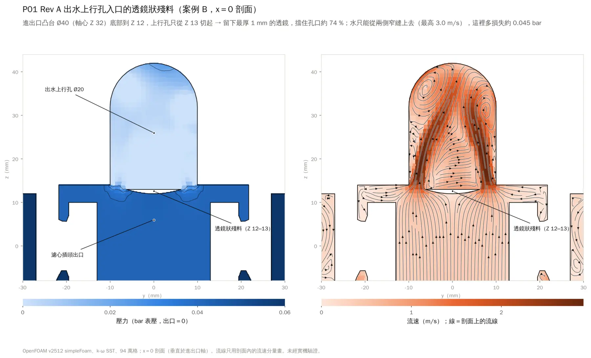
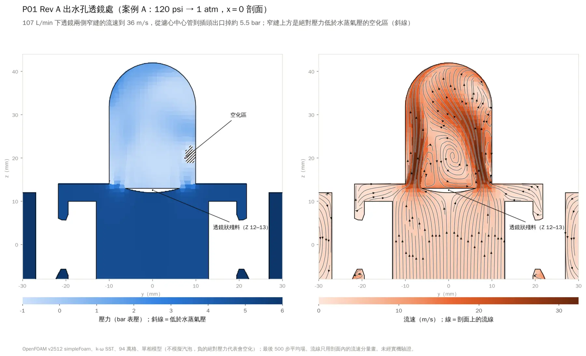
| 版本 | Rev B（2026-11-01）：頭座重切插座頂，切除出水孔入口的殘料 |
|---|---|
| 濾心 | 膜淨 C10 10 吋 PES 0.2 µm（2-222／鰭尾） |
| 主材料 | PP-GF30（頭座、杯體） |
| 額定流量 | 10 L/min |
| 手算乾淨壓損 | 0.122 bar（20 °C 水）／0.335 bar（10 °C PG25） |
| CFD 額定壓損 | 0.123 bar（20 °C 水、額定流量；Rev A 0.164） |
| 外形 W×D×H | 164 × 144 × 365 mm |
| 乾重 | 約 1.5 kg |
| 零件 | 客製 8／標準 14／外購 5 |
| 工程圖 | 9 張 |
| 強度手算 | 最弱為凸耳根部彎曲（65 °C 長期 SF 1.15）；推估爆破約 57 bar |

DIN 軌 · C48 · 4 L/min
免開殼膠囊型
整支 C48 膠囊像插卡一樣插進兩個自閉閥端座；拉一下鎖扣、把進水座往下滑 33 mm 就能取下，不開殼、不碰 O-ring、不必關管路閥。

- 換濾心
- 不開殼：膠囊兩端 Ø12 插管插入 PPSU 自閉閥端座；進水座沿 T 槽滑動，彈簧鎖扣兩段定位；出水座另加止回閥芯
- 進出口
- Ø12 快插（PP），可選配 OCP UQD04
- 安裝
- TS35 DIN 軌彈簧扣片，或 0U 立柱掛鈕
- 看壽命
- 出口機械式累積流量計加安裝日期標籤；讀數到標籤上的更換值就換


水怎麼流
Rev A · 額定 4 L/min · CFD 整機壓損 0.154 bar（不含止回閥芯、流量計）
- 未過濾的水Ø12 快插彎頭進水下方 +X 側，經 G½ 端面 O-ring 接進水端座 A0.153
- 進水端座 A 的提動閥側口 Ø10 → 閥腔 Ø16；膠囊插管把閥芯頂開，水從三支頂推爪之間的窗口轉 90° 擠進 Ø8 插管0.144
- 穿過濾材C48 膠囊（下進上出）PES 0.2 µm，膠囊本身就是濾殼0.108 → 0.048
- 濾後的水出水端座 B插管 → 提動閥座 → 閥腔 → 側口的止回閥芯0.011
- 出水快插彎頭 → 累積流量計上方 −X 側出水，Ø12 PE 管往下接機械式累積流量計，再回 CDU−0.001
CFD 的流體域不含止回閥芯和累積流量計（設計說明估兩件合計約 0.05 bar）。
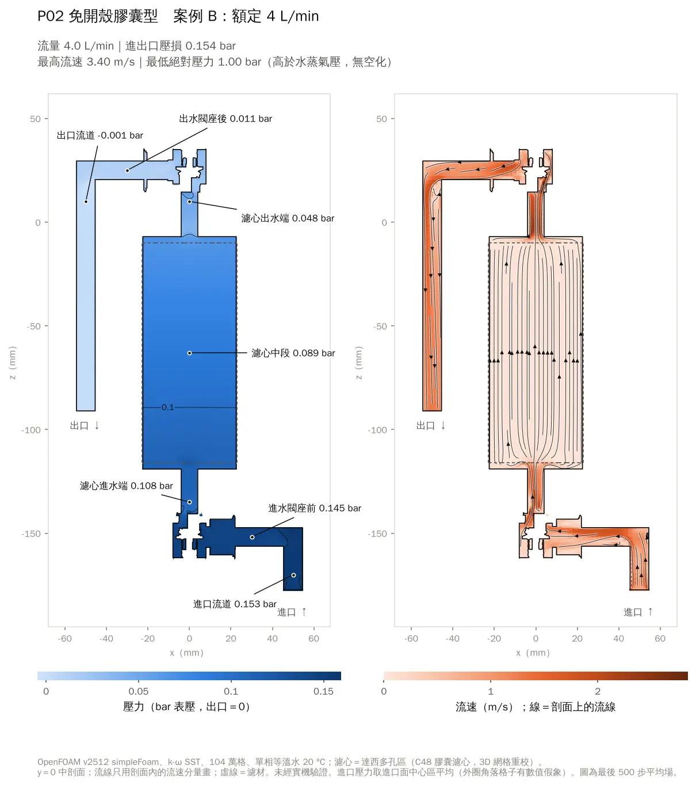
- 額定壓損（CFD）
- 0.154 bar加回兩件約 0.20；手算 0.218
- 膠囊段
- 0.060 bar佔整機 39 %
- 最高流速
- 3.4 m/s進水閥座的插管入口
- 120 psi 直通
- 33.2 L/min空化極小，約 0.2 mm³
CFD 看到的重點
- 比手算多出來的壓損在兩個提動閥座，各 0.036–0.037 bar（手算 0.016／0.011）：水從側口進環室後要轉 90°、穿過頂推爪窗口，插管入口形成偏一側的噴流。
- 加回止回閥芯和流量計，整機約 0.20 bar，在 0.30 bar 目標內；加選配 UQD04 兩對約 0.32 bar，會超過。
- 120 psi 時兩個閥座合計吃掉 5.3 bar，是限住流量的主因；這已超過共同規格的最高操作壓力 2.5 bar，只當流道極限參考。
更多流體圖
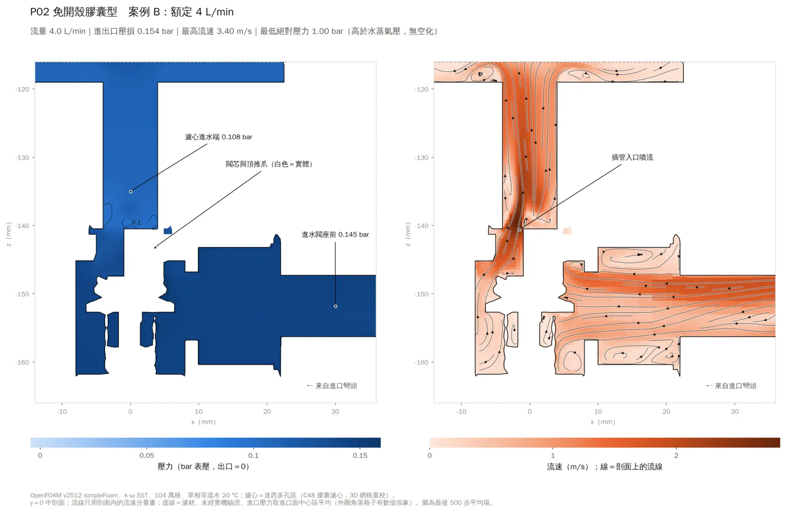
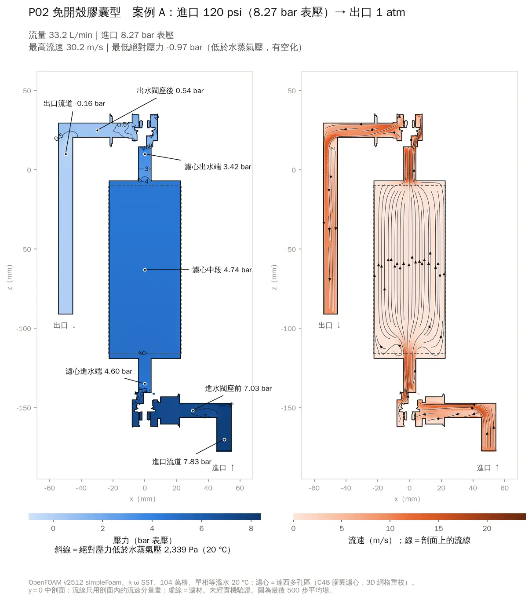
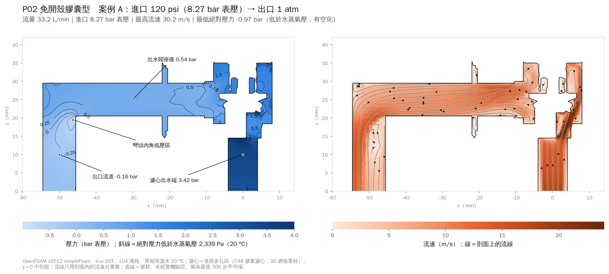
| 版本 | Rev A |
|---|---|
| 濾心 | 膜淨 C48 膠囊 Ø48 × 115（≤ 40 °C，只裝供水側） |
| 主材料 | PPSU（端座、閥芯） |
| 額定流量 | 4 L/min |
| 手算乾淨壓損 | 0.218 bar（20 °C 水）／0.479 bar（10 °C PG25） |
| CFD 額定壓損 | 0.154 bar（20 °C 水、額定流量；不含止回閥芯、流量計） |
| 外形 W×D×H | 135 × 82 × 269 mm |
| 乾重 | 431 g |
| 零件 | 客製 7 種 12 件／標準 5 種 11 件／外購 8 種 10 件 |
| 工程圖 | 8 張 |
| 強度手算 | 頂推爪挫屈 SF 7.6；3 bar 時端座分離力 40.5 N |

落地 · C10 × 2 · 15 L/min · Rev B
雙聯不停機型
PVDF 歧管掛兩支旋入式杯體，中央一根旋轉閥桿同時切換進水層與出水層；平時一杯運轉，換濾心時把把手轉到另一側，離線那杯洩壓後旋下，系統不停機。

- 換濾心
- 兩支杯體各自旋入：雙線鋸齒牙（P 4、Ph 8，約 1.4 圈到止擋），徑向 O-ring AS568-236 密封，不靠鎖緊力；中央旋轉閥 A／A+B／B 三段定位，離線側先洩壓再旋下
- 進出口
- 共同進出口各一個 G1 外牙（ISO 228-1）加 PVDF 活接螺母，尾件可換（G1×G¾，端面 O-ring）
- 安裝
- 落地 SS316 3 mm 背板加底板與加強肋，歧管以 4 × M6 鎖入熱壓嵌件
- 看壽命
- 指針式膜片差壓錶 0–1 bar 接共同進出口，讀運轉中那一支的壓差；純機械、不需電源


水怎麼流
Rev B · 額定 15 L/min（單杯運轉） · CFD 整機壓損 0.197 bar
- 未過濾的水共同進口 G1（活接）水先進中央旋轉閥芯的進水層（z 44）0.198
- 閥芯窗口 → 杯座 A 環室閥位 A：窗口對著杯 A，經 Ø16 流道和閥座進環室；杯 B 被閥芯隔開，可以拆0.180
- 凸台外 7 mm 環形通道 → 杯內環隙Rev B 把插座凸台縮到 R30，水沿通道往下，充滿濾心外側0.180
- 穿過濾材濾材（外 → 內）C10 濾心0.180 → 0.031
- 濾後的水中心管 → 清水上升孔 Ø36濾後水往上，轉進閥芯出水層（z 74，和進水層同相位）0.028
- 共同出口 G1（活接）差壓錶接在共同進出口，讀的是運轉中那一支0.002
閥位 A+B 時兩杯並聯；切換途中任何角度至少一支杯體通水，換濾心不停機。
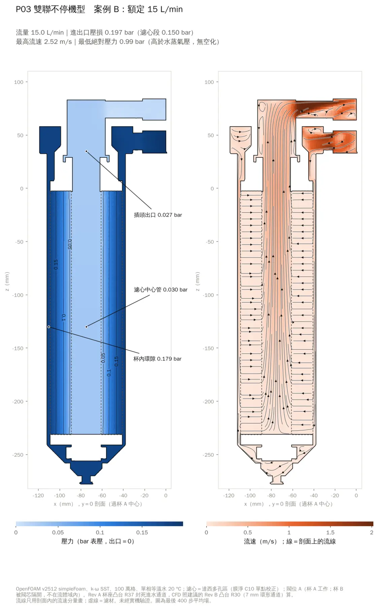
- 額定壓損（CFD）
- 0.197 bar手算 0.219
- 濾心段
- 0.150 bar佔整機 76 %
- 最高流速
- 2.5 m/s閥芯進水層往杯座的流道
- 120 psi 直通
- 172 L/min閥芯出水轉角空化約 72 mm³
CFD 看到的重點
- 濾心段 0.150 bar 和校正值一致，表示濾心插頭和閥芯的 O-ring 處沒有旁通。
- R30 環形通道在 15 L/min 時平均流速約 0.17 m/s，環室到杯內環隙幾乎沒有壓降，凸台縮小不會增加壓損。
- 120 psi 時閥芯兩層流道合計吃掉約 5.5 bar：殼體流道的損失跟流量平方成正比，濾心只跟流量成正比，所以高流量時殼體變成主要阻力。
更多流體圖
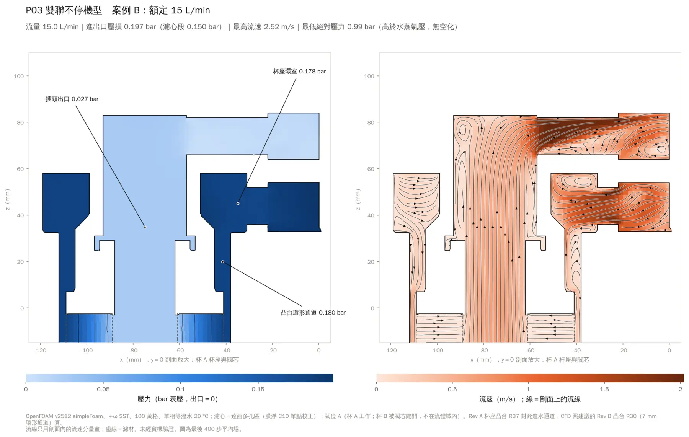
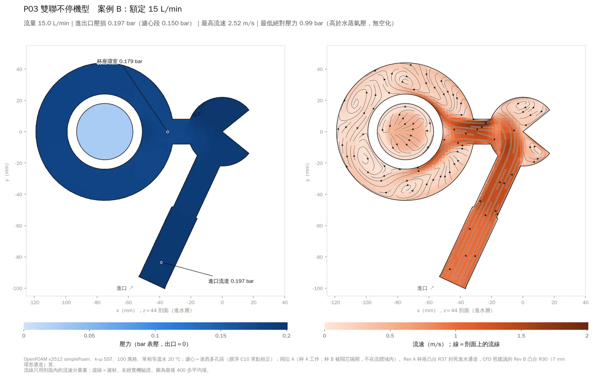
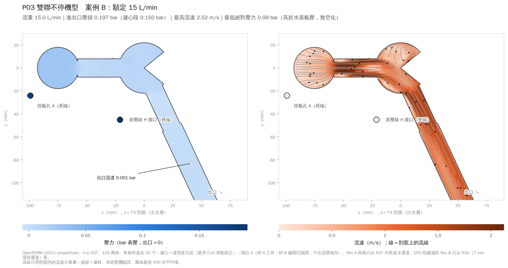
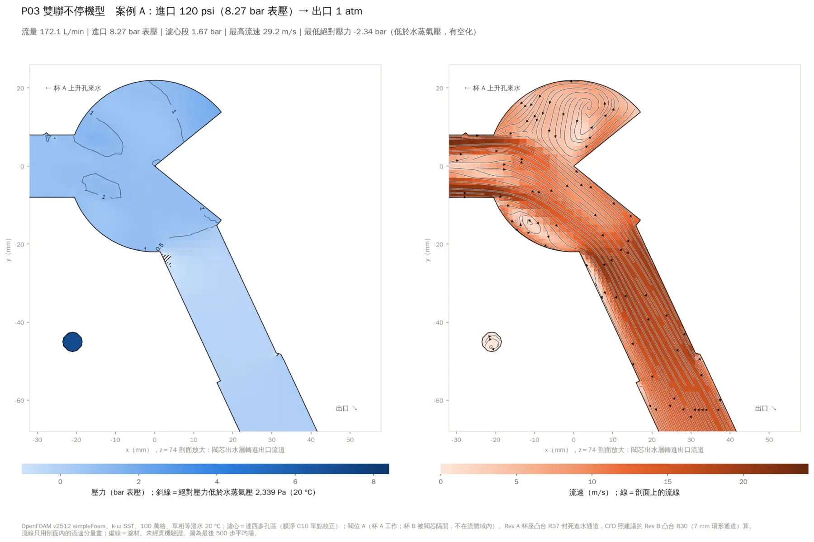
Rev B（2026-11-02）：杯座進水通道
Rev A 的插座凸台外半徑 37 mm 剛好等於杯體內半徑，進水環室和杯身之間沒有通道，水到不了濾心。Rev B 把凸台縮到 R30（選配 CMG 濾心時 R34），留 7 mm 環形通道；本頁的 CFD 就是照 Rev B 的通道算的。
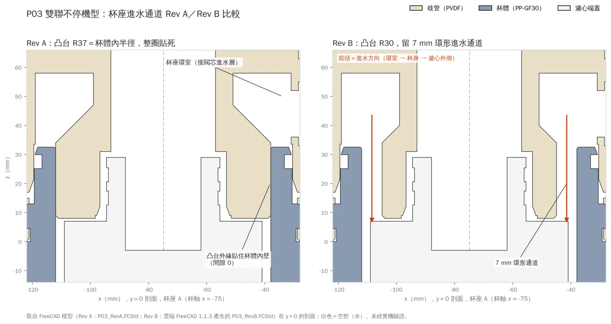
| 版本 | Rev B（2026-11-02）：插座凸台縮到 R30，留出杯座進水通道 |
|---|---|
| 濾心 | 膜淨 C10 10 吋 × 2（222／鰭尾，10–65 °C）；選配 CMG 5 吋（≤ 40 °C、建議 ≤ 12 L/min） |
| 主材料 | 歧管 PVDF；杯體 PP-GF30；閥芯 PPS-GF40；閥座 PTFE-GF25；框架 SS316 |
| 額定流量 | 15 L/min（單杯運轉，換濾心時另一杯承擔全流量） |
| 手算乾淨壓損 | 單杯 0.219 bar（20 °C 水）／0.539 bar（10 °C PG25）；A+B 並聯 0.108／0.268 |
| CFD 額定壓損 | 0.197 bar（20 °C 水、額定流量） |
| 外形 W×D×H | 320 × 266 × 855 mm |
| 乾重 | 約 13.4 kg（Rev B 歧管減重 0.18 kg） |
| 零件 | 客製 11（7 項）／標準 25（9 項）／外購 15（7 項） |
| 工程圖 | 8 張 |
| 強度手算 | 最弱為杯體錐底（65 °C 長期 SF 1.17；12 bar 爆破 SF 4.09）；切換扭力 5.2 N·m |

落地 · C10 · 20 L/min · Rev B
頂開蓋型
進出水管都接在本體下方，換濾心只要從頂部把透明手輪蓋轉開 ⅓ 圈；蓋頂排氣閥的把手兼作連鎖，不先洩壓就轉不開。

- 換濾心
- 透明手輪蓋配雙線梯形牙 Tr106×12(P6)，轉 ⅓ 圈；徑向 O-ring AS568-236；排氣閥把手卡住本體凹槽形成連鎖
- 進出口
- 本體下方 2 × G¾ 外牙加平面活接螺母；側下切線進水、杯底中心出水
- 安裝
- 落地三腳座（可選壁掛鞍座）
- 看壽命
- 進口壓力錶加試車時設定的紅綠刻度環；透明蓋可直接看濾心


水怎麼流
Rev B · 額定 20 L/min · CFD 整機壓損 0.255 bar
- 未過濾的水進水 G¾ 活接 → 進水立管 Ø16管路都在本體下方，換濾心不動管接頭0.254
- 切線通道 Ø16（z −266.5）立管頂端轉進水平通道，貼著杯壁切線射入；Rev B 的橋接塊把通道整段包住
- 杯內環隙旋流水繞軸旋轉後往上，不直衝濾心；通道末端的 G½ 錶口接進口壓力錶0.223
- 穿過濾材濾材（外 → 內）C10 濾心，插頭朝下0.223 → 0.022
- 濾後的水中心管往下 → 222 插頭 → 出水腔出水腔 Ø34 → 出水孔 Ø160.015
- 杯底中心 G¾ 出口（活接）0.003
頂部透明手輪蓋的圓頂最高點有排氣孔，接排氣球閥；球閥把手兼連鎖，不先洩壓就轉不開蓋。
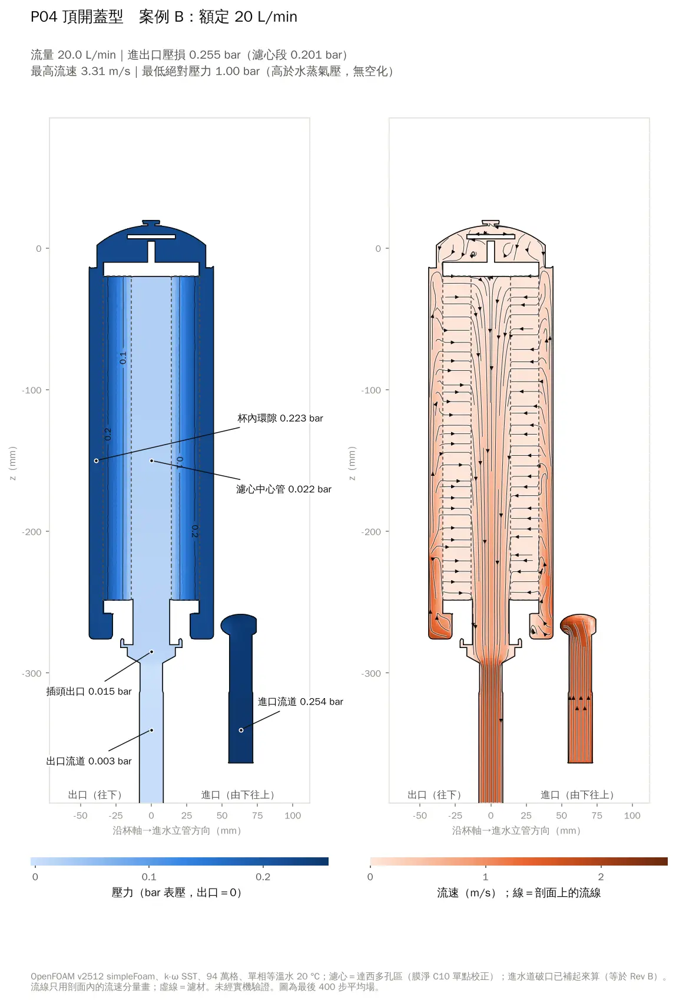
- 額定壓損（CFD）
- 0.255 bar手算 0.272
- 濾心段
- 0.201 bar佔整機 79 %
- 最高流速
- 3.3 m/s立管轉進切線通道
- 120 psi 直通
- 201 L/min出水管入口空化約 96 mm³
CFD 看到的重點
- 水平剖面看得到切線進水讓整圈環隙繞軸旋轉；最高流速 3.3 m/s 在立管頂端轉進切線通道之後，約是通道平均流速的 2 倍。
- 濾心以外的流道合計約 0.054 bar：進口到杯內環隙 0.034、中心管到出口 0.019 bar。
- 120 psi 時出水管入口的尖角後面有一圈空化區（約 96 mm³）；尖角倒圓角或錐面放緩可以改善，還沒算過。
更多流體圖
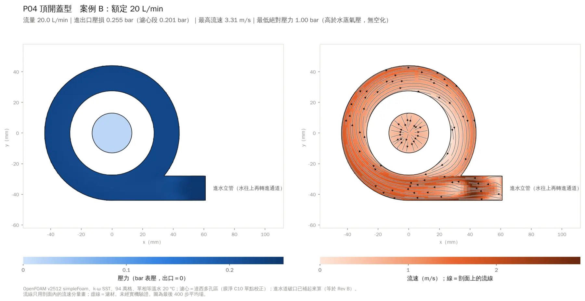
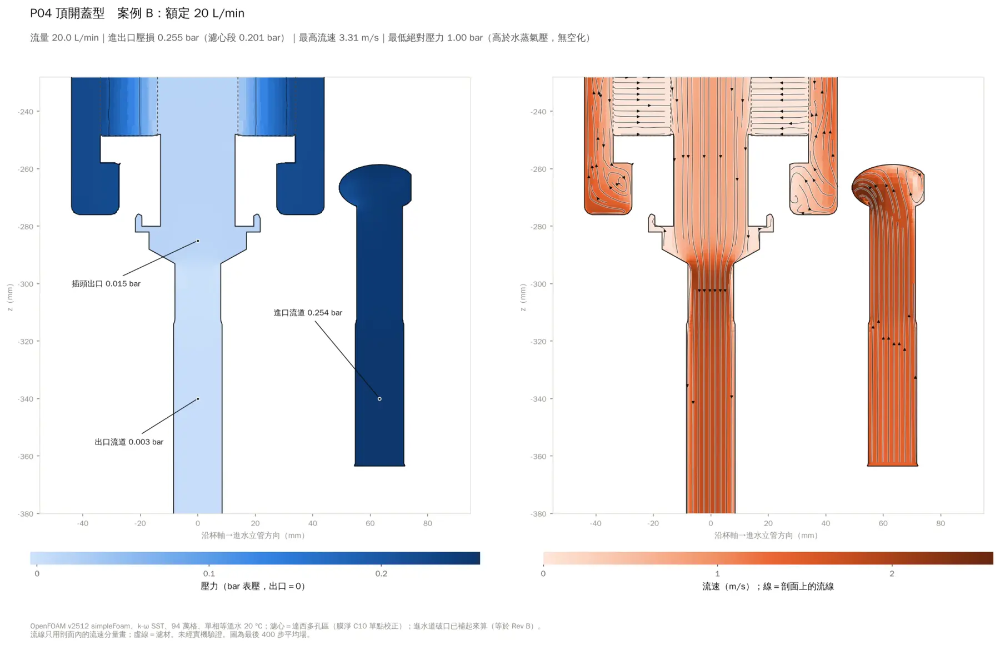
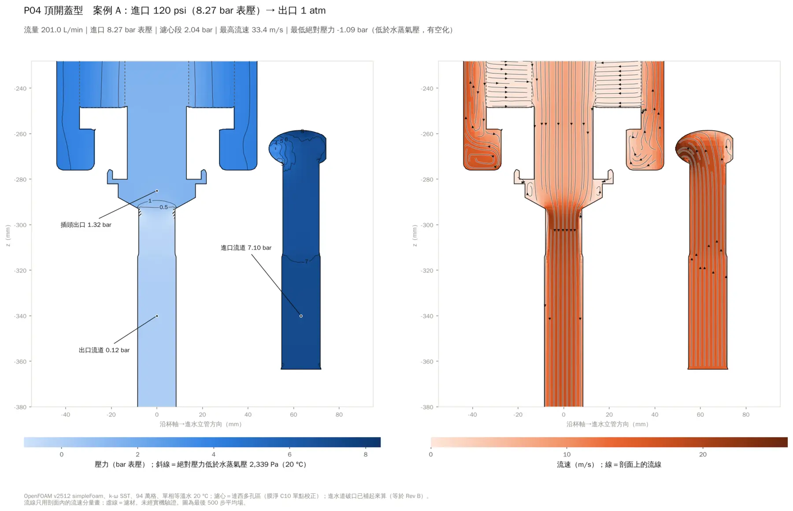
Rev B（2026-11-01）：切線進水道包覆
Rev A 的 Ø16 切線進水通道在杯身外壁和進水立管之間（x 約 24–37 mm）沒有材料包住，開了約 13 × 14 mm 的口，做出實物會漏水。Rev B 加一塊和錶座塊同斷面（30 × 30 mm）的橋接塊，通道四周壁厚 7 mm。CFD 本來就把這段當封閉流道算，所以本頁的結果就是 Rev B 的流道。
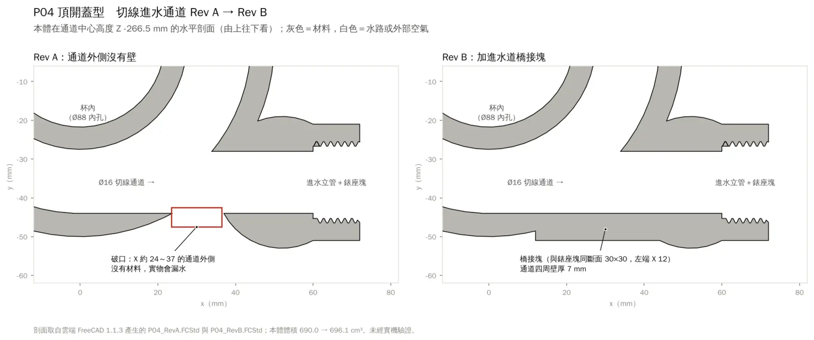
| 版本 | Rev B（2026-11-01）：加橋接塊包住切線進水道 |
|---|---|
| 濾心 | 膜淨 C10 10 吋（插頭朝下） |
| 主材料 | 本體 PP-GF30；蓋 PPSU 透明琥珀；連鎖把手與三腳座 SS316 |
| 額定流量 | 20 L/min |
| 手算乾淨壓損 | 0.272 bar（20 °C 水）／0.698 bar（10 °C PG25） |
| CFD 額定壓損 | 0.255 bar（20 °C 水、額定流量） |
| 外形 W×D×H | 349 × 302 × 526 mm |
| 乾重 | 約 3.5 kg |
| 零件 | 客製 6／標準 9／外購 4 |
| 工程圖 | 6 張 |
| 強度手算 | 12 bar 時杯體環向 8.8 MPa，低於含熔接線折減的 12 MPa |

管路支撐 · C10 DOE · 20 L/min
衛生卡箍型
全 PVDF 頭座與杯體用一支 DN80 衛生卡箍合起來；卡箍扣上的同時，刀口就把 DOE 濾心兩端的平墊壓緊。

- 換濾心
- 單螺栓鉸鏈衛生卡箍 DIN 32676 DN80（Ø106），蝶形螺帽免工具；DOE 平墊刀口密封，SS316 波形彈簧補償
- 進出口
- DIN 32676 DN25（Ø50.5）卡箍端 × 2
- 安裝
- 兩個 Ø38 抱箍夾在 DN25 管段上，鎖在 41 × 41 C 型鋼
- 看壽命
- 活塞磁簧差壓開關在 0.7 bar 輸出乾接點；另有兩個迷你卡箍測壓口


水怎麼流
Rev A · 額定 20 L/min · CFD 整機壓損 0.208 bar
- 未過濾的水DN25 卡箍進口（+X）頭座進水孔 Ø260.209
- 頭座環腔（濾前）頂部 P1 測壓口兼排氣；差壓開關高壓口也在這裡
- 杯內環隙往下沿杯壁充滿濾心外側0.209
- 穿過濾材DOE 濾心（外 → 內）上、下刀口壓緊平墊，把濾前和濾後隔開0.209 → 0.010
- 濾後的水中心孔往上 → 頭座中心孔 Ø23差壓開關低壓口在這裡0.003
- 出水橋管 → DN25 卡箍出口（−X）墓碑形斷面的橋管跨過環腔，上面有 P2 測壓口0.000
杯底中心是 Ø25 迷你卡箍排水口；差壓開關 0.7 bar 動作，輸出乾接點。
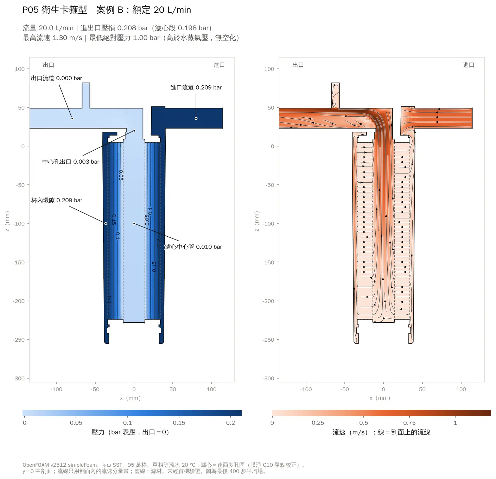
- 額定壓損（CFD）
- 0.208 bar手算 0.221
- 濾心段
- 0.198 bar佔整機 95 %
- 最高流速
- 1.3 m/s中心出水轉進橋管
- 120 psi 直通
- 396 L/min橋管轉角空化約 1,830 mm³
CFD 看到的重點
- 10 款裡接口最大、殼內損失最小：DN25 接口和頭座流道合計只有約 0.010 bar，壓差幾乎都在濾心上。
- 120 psi 時濾材內外壓差從底部 3.4 bar 增加到頂部 5.4 bar，頂端超過膜淨標示的 5 kg/cm²（4.9 bar）；要先向原廠確認這個標示指的是壓差還是管路壓力。
- 120 psi 時中心出水轉進橋管的內側轉角有空化；轉角倒大圓角或加大橋管斷面可以改善，還沒算過。
更多流體圖
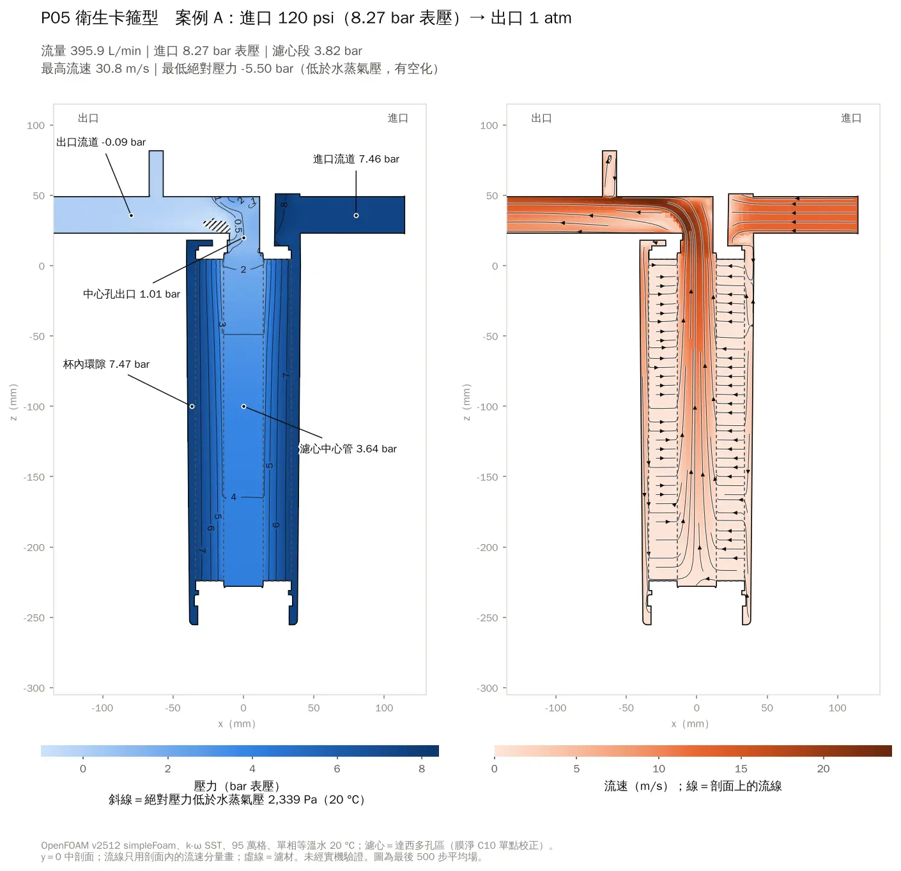
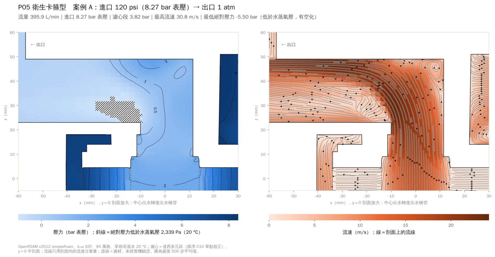
| 版本 | Rev A |
|---|---|
| 濾心 | 膜淨 C10 10 吋 DOE（平墊刀口密封） |
| 主材料 | 濕接件全 PVDF；EPDM；SS316 |
| 額定流量 | 20 L/min |
| 手算乾淨壓損 | 0.22 bar（20 °C 水）／0.65 bar（10 °C PG25） |
| CFD 額定壓損 | 0.208 bar（20 °C 水、額定流量） |
| 外形 W×D×H | 260 × 150 × 403 mm |
| 乾重 | 3.96 kg |
| 零件 | 客製 3／標準 13／外購 3 |
| 工程圖 | 4 張 |
| 強度手算 | 杯底最弱（65 °C 長期 SF 1.36）；推估爆破約 29 bar |

19 吋 3U · C10 · 15 L/min · Rev B
機架抽屜型
19 吋 3U 抽屜裡臥放一支 PPSU 濾殼，門蓋就開在前面板；扳下一支偏心凸輪扳把，門蓋被拉入 12 mm 並過死點自鎖。

- 換濾心
- 鉸鏈門蓋加單一偏心凸輪扳把：拉鉤扣栓、過死點 3° 自鎖、保險滑塊、兩段式洩壓；不必拉出托盤
- 進出口
- 前面板 2 × OCP UQD08
- 安裝
- EIA-310 19 吋 3U，20 吋全展開滑軌
- 看壽命
- 電子式差壓、超音波流量與液溫、LED 燈條、濾心 NFC 標籤；Modbus RTU／4–20 mA／乾接點輸出


水怎麼流
Rev B · 額定 15 L/min · CFD 整機壓損 0.286 bar（Rev A 0.315）
- 未過濾的水前面板 UQD08 進口 → 90° 彎頭Rev B：UQD 指定 Cv ≥ 5.2、彎頭改大半徑；這兩件是濾心以外最大的阻力0.283 → 0.219
- 進水軟管 → 切線進水口 → 濾殼環腔濾殼臥放，頂部 2 支自動排氣閥0.213
- 穿過濾材濾材（外 → 內）C10 濾心臥裝0.213 → 0.063
- 濾後的水222 插頭 → 外殼後端出水頸差壓傳送器取濾前環腔和濾後出水頸0.059
- 回水軟管 U 形彎 → 超音波流量計軟管向後繞 R120 回到前方，流量計含液溫
- 出口 UQD08 → CDU 回水0.039 → −0.003
換濾心不必拉出托盤：扳下偏心凸輪扳把、打開前面的門蓋，濾心從前面抽出。
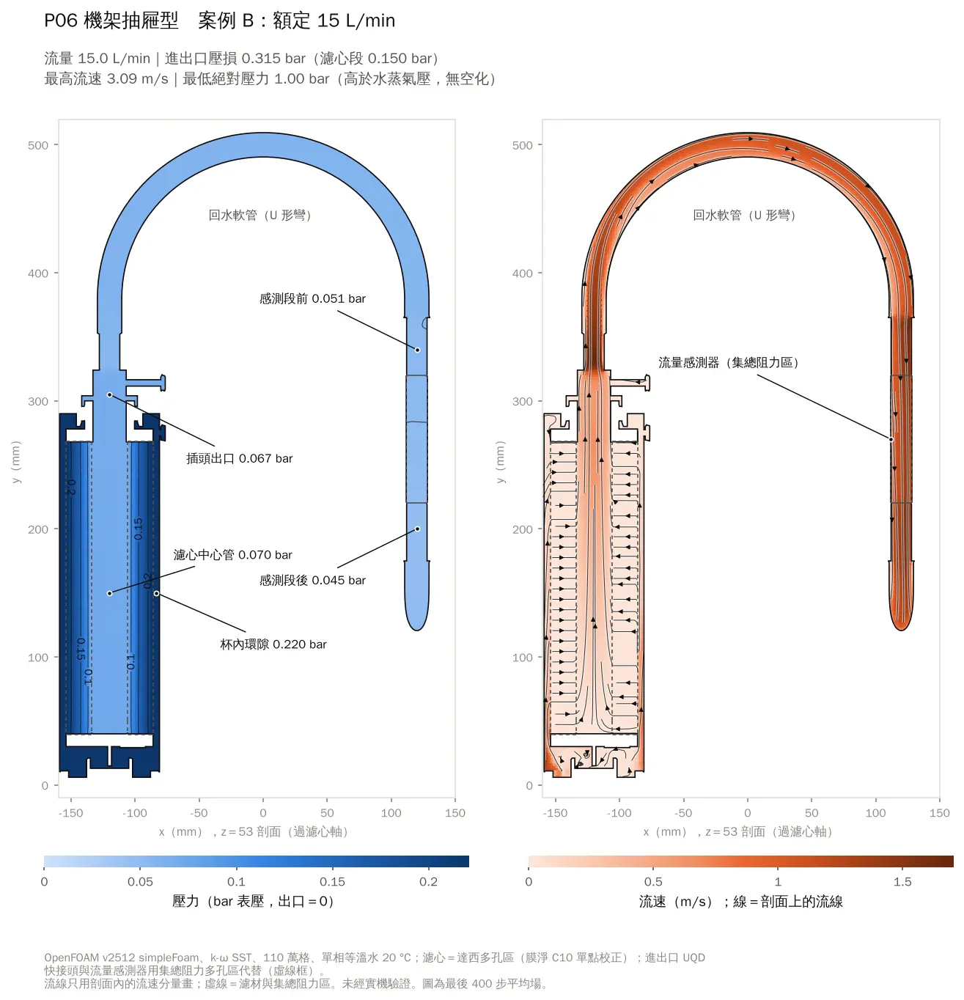
- 額定壓損（CFD）
- 0.286 barRev A 0.315；手算 0.272
- 濾心段
- 0.150 bar佔整機 52 %
- 最高流速
- 2.1 m/s進口彎頭入口
- 120 psi 直通
- 101.5 L/minRev A；沒有空化
CFD 看到的重點
- 兩個 UQD 合計 0.086 bar（Rev A 0.103）。CFD 用型錄 Cv 換算的阻力代替 UQD 內部，所以實際值看買到的 UQD；Cv 只有 4.75 時整機會回到約 0.30 bar。
- Rev A 的直角彎頭在內角分離、外角回流，0.032 bar；Rev B 的圓弧彎沒有外角回流，降到 0.020 bar。
- 120 psi（Rev A）時兩個 UQD 吃掉 58 % 的壓差，把流量限在約 100 L/min，是 10 款裡唯一沒有空化的一款。
更多流體圖
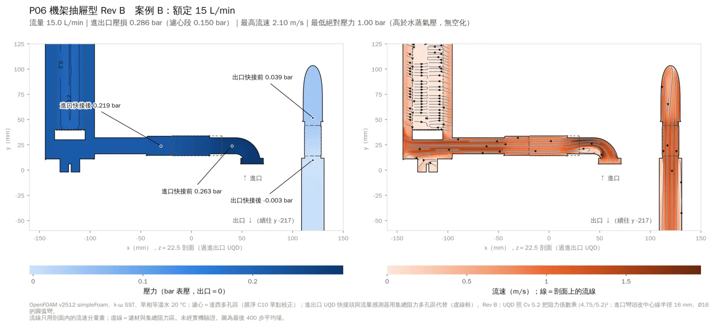
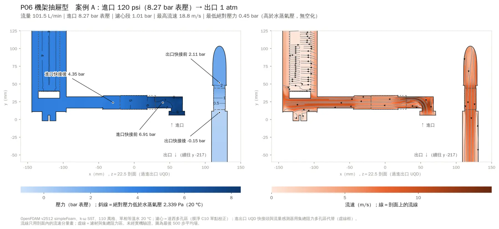
Rev B（2026-11-02）：只改採購規格
Rev A 額定 0.315 bar，超過 0.30 bar 目標。Rev B 的零件幾何不變：兩對 UQD08 指定 Cv ≥ 5.2（Rev A 4.75），進口 90° 彎頭指定中心線半徑 ≥ 16 mm 的大半徑或掃掠式。額定 0.315 → 0.286 bar，低於目標，但裕度只有約 0.014 bar，採購時要用廠商的 Cv 或壓降曲線核對。
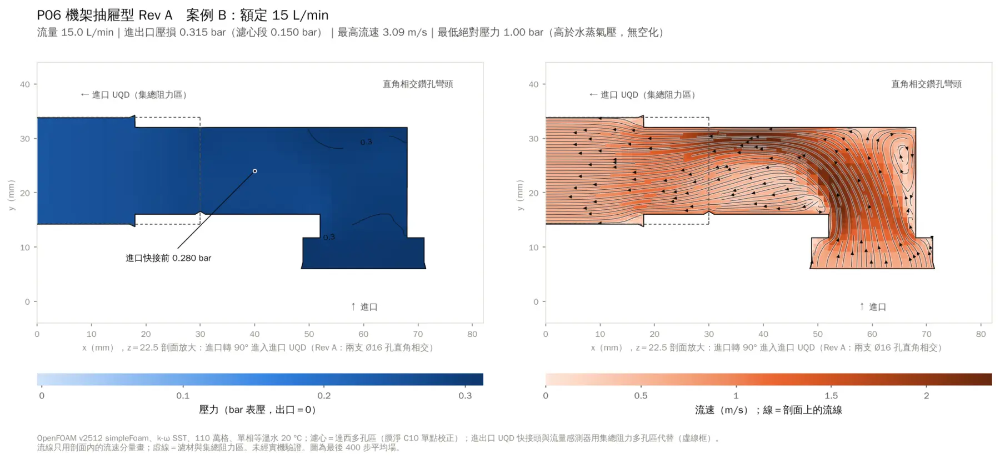
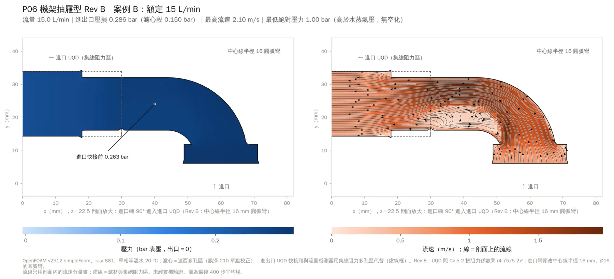
| 版本 | Rev B（2026-11-02）：UQD08 指定 Cv ≥ 5.2、進口彎頭改大半徑（零件幾何不變） |
|---|---|
| 濾心 | 膜淨 C10 10 吋（臥裝） |
| 主材料 | 濾殼 PPSU；托盤 SGCC；漏液盤 PP-GF30 |
| 額定流量 | 15 L/min |
| 手算乾淨壓損 | 0.272 bar（20 °C 水）／0.595 bar（10 °C PG25），Rev B 手算 |
| CFD 額定壓損 | 0.286 bar（20 °C 水、額定流量；Rev A 0.315） |
| 外形 W×D×H | 482.6 × 584.4 × 132.6 mm |
| 乾重 | 約 9.2 kg |
| 零件 | 客製 12／標準 15／外購 19（共 86 件） |
| 工程圖 | 14 張 |
| 強度手算 | 外殼推估爆破 54 bar |

壁掛 · C10 · 10 L/min
反洗延壽型
頭座內建 0.3 L 濾後清水蓄壓器；把手轉到反洗約 3 秒，清水由內往外沖掉濾餅，污泥排到集污瓶。

- 換濾心
- 杯體不轉（2 個止轉鍵），活接旋環 Tr140×6 把杯體拉到硬止擋；徑向 O-ring AS568-346；定位銷加 12 凹槽防鬆
- 進出口
- 一體 19 mm 軟管倒鉤 × 2（每口 2 道管束），加 G½ 排污口
- 安裝
- SS304 壁掛板
- 看壽命
- Ø63 差壓錶讀反洗前後的壓差恢復量，加機械反洗計數器；反洗後仍 ≥ 0.7 bar 就換


水怎麼流
Rev A · 額定 10 L/min · CFD 整機壓損 0.163 bar
- 未過濾的水19 mm 倒鉤進口主流道 Ø13 進三段旋轉閥（運轉位）0.164
- 轉 90° 往下進杯內充滿濾心外側；杯體不轉，用活接旋環鎖住0.142
- 穿過濾材濾材（外 → 內）C10 濾心0.142 → 0.042
- 濾後的水中心管 → 插頭 → 閥芯清水層同時把清水充進 0.3 L 蓄壓器（彈簧活塞上升）0.036
- 出口立管 → 頂端 90° 轉角 → 19 mm 倒鉤出口額定時最高流速就在這個轉角0.002
反洗（把手轉向右 90°）：進出口關閉，蓄壓器把濾後清水由內往外推過濾材約 3 秒，濾餅落到杯底，經吸污管排到集污瓶；反洗只用濾後清水。三個閥位的流路見上面的流路圖。
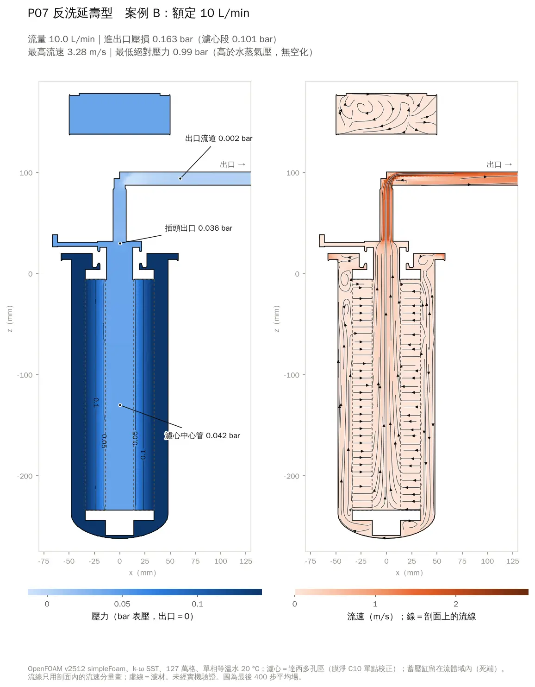
- 額定壓損（CFD）
- 0.163 bar手算 0.152
- 濾心段
- 0.101 bar佔整機 62 %
- 最高流速
- 3.3 m/s出口立管頂端轉角
- 120 psi 直通
- 104.8 L/min出口轉角空化約 2,670 mm³
CFD 看到的重點
- 濾心以外的流道約 0.062 bar，其中出口立管和頂端 90° 轉角 0.033 bar 最多；最高流速和最低壓力都在這個轉角，額定流量時沒有空化。
- 120 psi 時這個轉角後面的空化區幾乎塞滿 Ø13 流道，是 10 款裡最大的，汽泡會限流，也有空蝕和噪音的風險；改大半徑彎或加粗出口流道可以改善，還沒算過。
- 蓄壓缸在 CFD 裡是和主流道相通的死端，對運轉時的流動影響很小。
更多流體圖
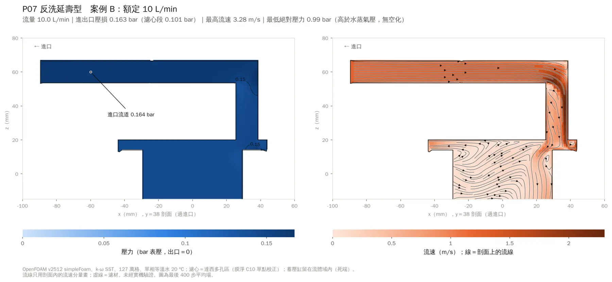
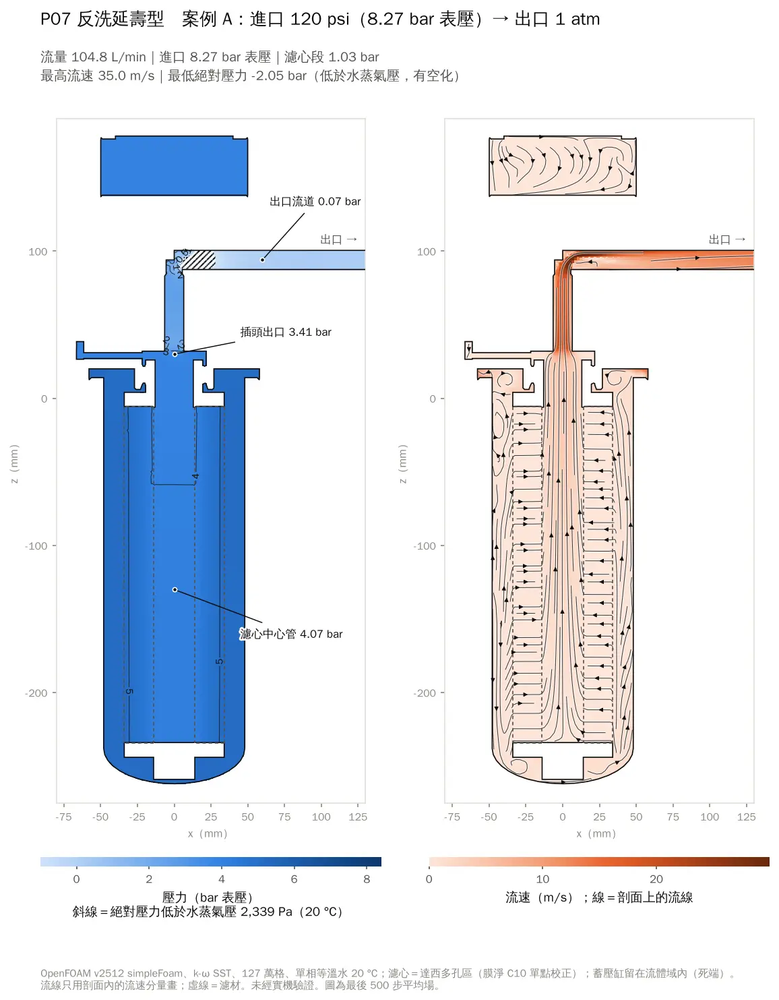
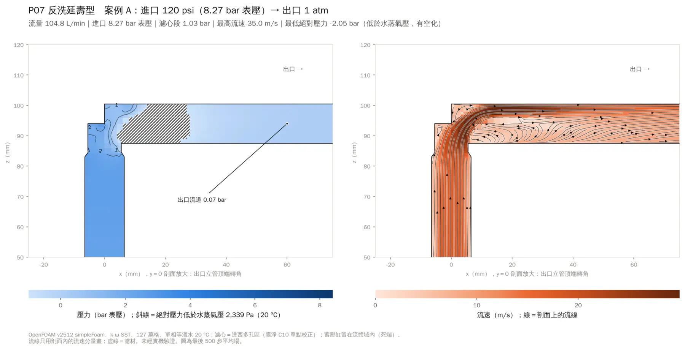
| 版本 | Rev A |
|---|---|
| 濾心 | 膜淨 C10 10 吋（外往內過濾） |
| 主材料 | PP-GF30；閥芯與活塞 PPS-GF40；把手 POM-C；SS316／SS304 |
| 額定流量 | 10 L/min |
| 手算乾淨壓損 | 0.152 bar（20 °C 水）／0.369 bar（10 °C PG25） |
| CFD 額定壓損 | 0.163 bar（20 °C 水、額定流量） |
| 外形 W×D×H | 238 × 216 × 599 mm |
| 乾重 | 約 6.5 kg（含濾心） |
| 零件 | 客製 9／標準 15／外購 10 |
| 工程圖 | 10 張 |
| 強度手算 | 3 bar 時各部位 ≤ 5 MPa；推估爆破 ≥ 54 bar（熔接線折減後約 32 bar） |

儲液槽頂 · C10 · 15 L/min
槽內沉入型
沒有壓力殼：PP-H 頭座帶著 C10 濾心直接插進 CDU 儲液槽，幫浦從頂端吸水；掀起提把就能整組提出換濾心。

- 換濾心
- 以儲液槽當殼體；徑向 O-ring AS568-236 塞入槽口座環，不鏽鋼鋼絲提把扣住凸耳
- 進出口
- 單一 G¾ 外牙出口穿出槽頂（可選 G¾ 活接 19 mm 倒鉤）
- 安裝
- 儲液槽頂：槽蓋開 Ø97 孔加 6 × M5
- 看壽命
- 複合真空錶（−1 至 +0.6 bar），紅區 −0.50 bar 依幫浦 NPSH 計算


水怎麼流
Rev A · 額定 15 L/min · CFD 整機壓損 0.162 bar（液面到出口頸）
- 未過濾的水儲液槽裡的冷卻液常壓開放槽；液位要高過濾心頂 20 mm0
- 孔板護套 48 個長孔孔外流速約 0.014 m/s，液面不會被吸出漩渦0.000
- 穿過濾材濾材（外 → 內）C10 濾心，插頭朝上吊掛0.000 → −0.151
- 濾後的水222 插頭 → Ø40 下降管 → 淨水腔真空錶接在淨水腔 +Y 側，讀 −0.153−0.154
- G¾ 出口頸 → 槽外幫浦吸入口出口在淨水腔頂端 30° 錐面最高點，氣泡會被帶走−0.162
沒有壓力殼，整段都在幫浦吸入側，所以壓力是負的（吸力）；真空錶讀值約等於濾心壓損。
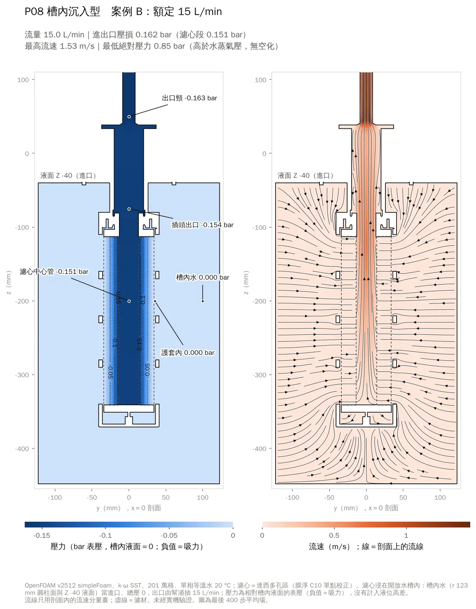
- 額定壓損（CFD）
- 0.162 bar液面到出口頸；手算 0.164
- 濾心段
- 0.151 bar佔整機 94 %
- 最高流速
- 1.53 m/s出口頸入口
- 120 psi
- 不適用吸入側、常壓水槽，只算額定
CFD 看到的重點
- 濾心以外只吃約 0.011 bar，吸入側的負壓幾乎全部來自濾心；真空錶的黃區 −0.35、紅區 −0.50 bar 不必為殼體修正。
- 最低絕對壓力 0.85 bar 在出口頸入口的縮流處，離水蒸氣壓很遠。
- CFD 沒有計入重力；實機錶讀值還要加上錶口高於液面的約 −0.01 bar。
更多流體圖
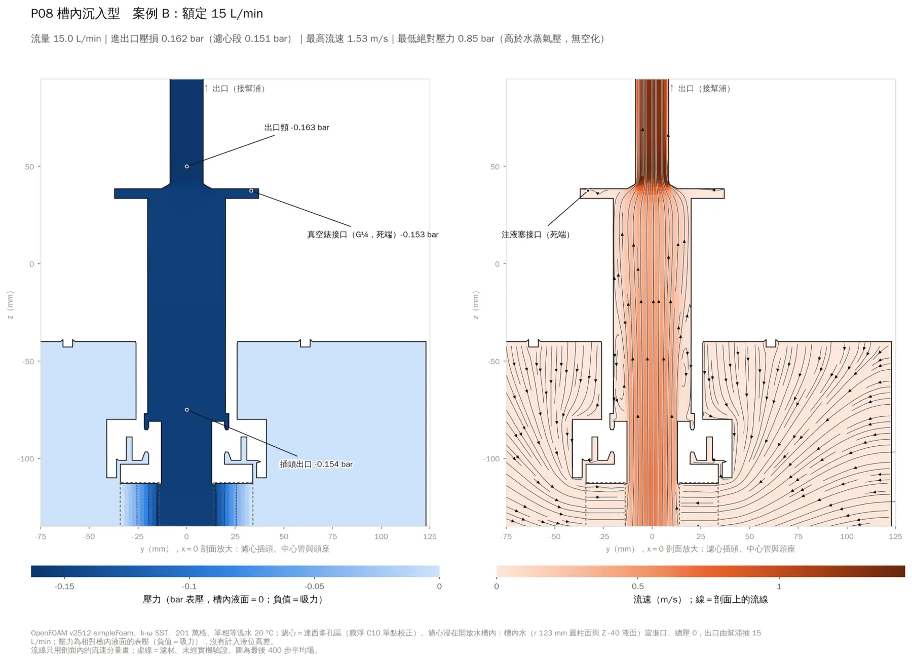
| 版本 | Rev A |
|---|---|
| 濾心 | 膜淨 C10 10 吋（插頭朝上吊掛，孔板護套） |
| 主材料 | 全 PP-H |
| 額定流量 | 15 L/min |
| 手算乾淨壓損 | 0.175 bar（20 °C 水）／0.494 bar（10 °C PG25） |
| CFD 額定壓損 | 0.162 bar（20 °C 水、額定流量；液面到出口頸） |
| 外形 W×D×H | 158 × 182 × 489 mm |
| 乾重 | 1.33 kg |
| 零件 | 客製 7／標準 8 項 31 件／外購 4 項 5 件 |
| 工程圖 | 8 張 |
| 強度手算 | 下降管外壓挫曲 SF 21；推估爆破約 49 bar（頂板控制） |

壁掛面板 · CMG · 10 L/min
面板模組型
活接、球閥、過濾器、浮子流量計、旁通與排水全部預裝在一張背板上並試壓好；現場掛 4 顆螺絲、接兩條管就能用。

- 換濾心
- 3 個不鏽鋼肘節扣（附保險扣）加杯口徑向 O-ring，免工具
- 進出口
- G1½ 活接，尾件可換：19 mm 倒鉤／G¾ 內牙／PP 承插 d25
- 安裝
- 整組預裝壁掛背板，4 個葫蘆孔
- 看壽命
- 浮子流量計看流量下降；掉到試車流量的 70 %（紅標記）就換


水怎麼流
Rev A · 額定 10 L/min · CFD 整機壓損 0.161 bar
- 未過濾的水進水活接 U1 → 三通 T1 → 進口球閥 V1V1 常開；T1 另一側是常關的旁通球閥 V30.158
- 左側下行管 → 頭座進水 G¾ → 進水環室充滿杯體和濾心外側0.153
- 穿過濾材濾材（外 → 內）CMG 濾心0.153 → 0.054
- 濾後的水222 插頭 → 中心出水室 → 出水 G¾0.046
- U 形下行管 → 浮子流量計（由下往上）流量計只在濾心支路上，讀值就是濾心流量0.042 → 0.005
- 出口球閥 V2 → 三通 T2 → 出水活接 U20.003
換濾心：先開旁通球閥 V3，再關 V1、V2，冷卻液走頂部旁通管，主迴路不停。
- 額定壓損（CFD）
- 0.161 bar手算 0.187
- 濾心段
- 0.099 bar佔整機 62 %
- 最高流速
- 1.3 m/s頭座進水口
- 120 psi 直通
- 146.9 L/minT2 內角接近汽化
CFD 看到的重點
- 浮子流量計在 CFD 裡用設計說明的假設阻力（10 L/min 時約 0.04 bar）；其餘活接、三通、球閥和彎頭合計約 0.024 bar，比手算少約 4 成。
- 120 psi 時流量是流量計刻度上限的 7 倍，浮子會頂到上止點；流量取決於流量計的阻力假設，耐受度要問廠商。
- 120 psi 時頂部三通 T2 的內角只比水蒸氣壓高約 0.03 bar，可能有輕微空化；改用掃掠式三通可以改善，還沒算過。
更多流體圖
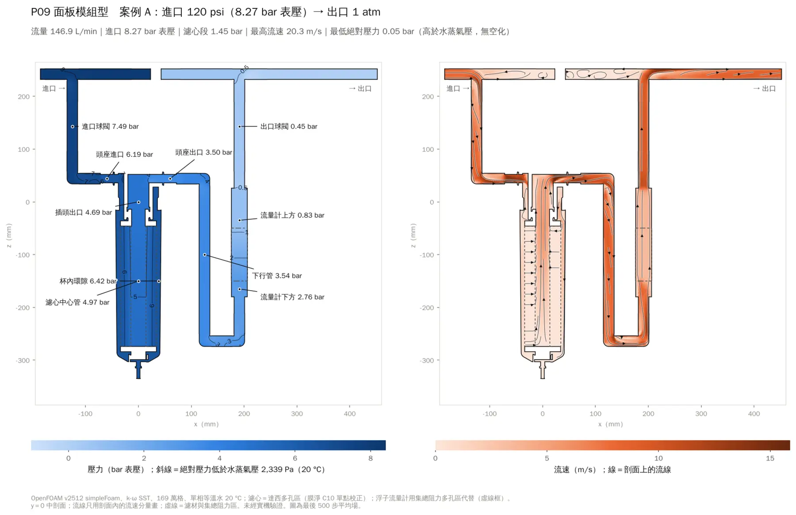
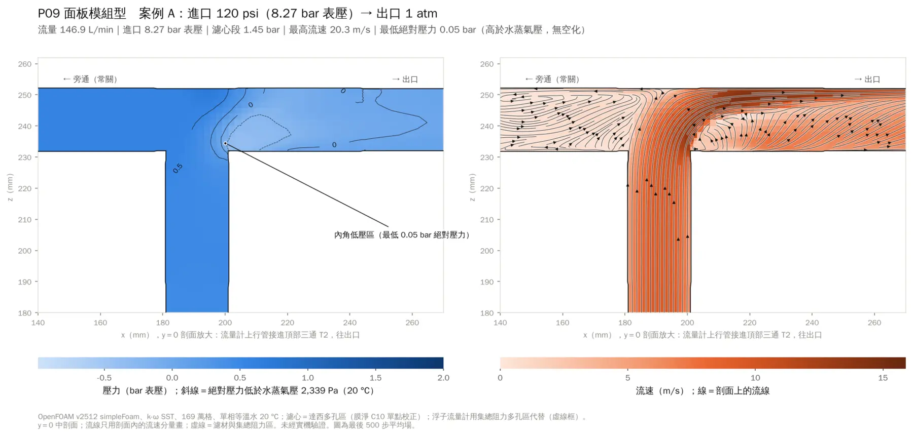
| 版本 | Rev A |
|---|---|
| 濾心 | 膜淨 CMG 10 吋（≤ 40 °C，只裝供水側）；改參數可換 C10（≤ 65 °C） |
| 主材料 | 頭座與杯體 PP-GF30；背板、管路與球閥 PP-H；流量計錐管 PSU |
| 額定流量 | 10 L/min |
| 手算乾淨壓損 | 0.19 bar（20 °C 水）／0.40 bar（10 °C PG25） |
| CFD 額定壓損 | 0.161 bar（20 °C 水、額定流量） |
| 外形 W×D×H | 590 × 161 × 698 mm |
| 乾重 | 約 7.1 kg |
| 零件 | 客製 8／標準 19／外購 8 |
| 工程圖 | 9 張 |
| 強度手算 | 肘節扣每扣 581 N（額定 1500 N，SF 2.58）；12 bar 時最大應力 16.3 MPa |

扁平盒 · C48 × 4 · 16 L/min · Rev B
扁平並聯型
兩支 PPSU 集管之間平躺 4 支 C48 膠囊；每支一把凸輪扳把，扳起時自閉閥先關、插管後脫，其餘 3 支照常過濾。

- 換濾心
- 膠囊本身承壓；扳起扳把，兩端滑套退回 12 mm，自閉提動閥先關再脫開（裕度 2.5 mm）
- 進出口
- 兩集管兩端 G½ 內牙加 ED 端面密封，可同方向串接多台
- 安裝
- 扁平盒高 85.5 mm，PP-GF30 底盤 4 耳 ⌀6.5（M6）
- 看壽命
- 整機差壓錶（預警 0.5／更換 0.7 bar），加每支一個透明轉子視窗，看哪一支變慢


水怎麼流
Rev B · 額定 16 L/min（4 支 × 4） · CFD 整機壓損 0.223 bar（Rev A 0.358）
- 未過濾的水進水 G½ → 進水集管主通道 Ø14 從 −X 端把水分給 4 條支路（Z 型逆向回水，4 條路徑等長）0.213
- 側孔 → 環槽 → 徑向窗 → 閥腔每條支路：側孔 Ø10 上行，經滑套環槽和 4 個 5 × 8 徑向窗（Rev B）
- 提動閥 → 城垛槽 → 插管 Ø8升程 2.5 mm；Rev B 城垛槽 4 × 5，槽口延伸到閥座間隙0.164
- 穿過濾材C48 膠囊4 支並聯，每支約 4 L/min0.164 → 0.105
- 濾後的水出水端反過來走插管 → 城垛 → 閥座 → 閥腔 → 徑向窗 → 出水立管 Ø10
- 切線導流槽 → 轉子腔透明視窗下的轉子轉速顯示這一支的流量
- 出水集管 → 出水 G½（+X 端）0.039
扳起任一支的扳把，兩端提動閥先關、插管後脫，其餘 3 支照常過濾。沿途壓力取 1 號支路。
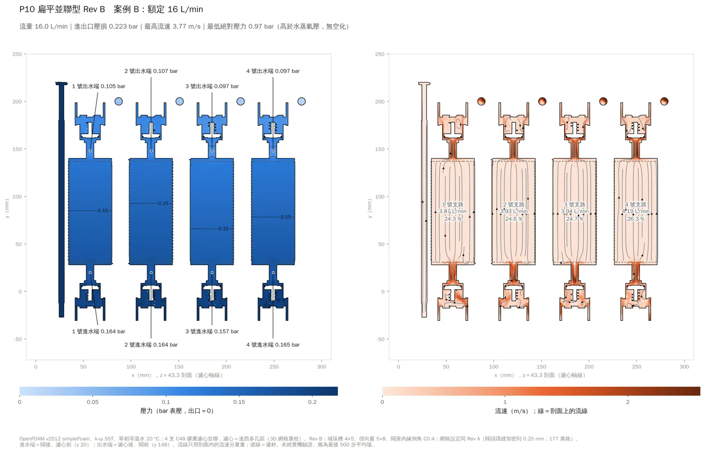
- 額定壓損（CFD）
- 0.223 barRev A 0.358；手算 0.228
- 膠囊段
- 0.057–0.068 bar4 支
- 4 支分流
- 24.3–26.3 %和平均差不到 5 %
- 120 psi 直通
- 79.1 L/minRev A；平均場沒有空化
CFD 看到的重點
- Rev B 的進水提動閥段從 0.099 降到 0.032 bar，出水提動閥從 0.052 降到約 0；膠囊段不變，表示加大的槽口沒有繞過濾心的通路。
- 現在最大的一段是閥腔到出口（徑向窗、立管、導流槽、轉子腔、出水集管），約 0.12 bar。
- 差壓錶乾淨讀值約 0.175 bar（Rev A 0.31）；預警 0.5、更換 0.7 bar 的刻度建議照實機乾淨讀值重訂。
更多流體圖
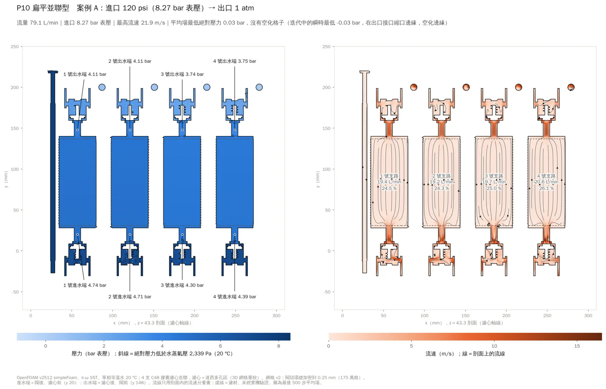
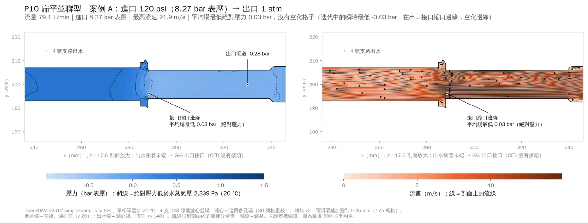
Rev B（2026-11-02）：提動閥流道加大
Rev A 額定 0.358 bar，超過 0.30 bar 目標，主要在每條支路兩端的提動閥。Rev B 把城垛槽 3.5 × 3 改成 4 × 5（側開口 42 → 80 mm²）、徑向窗 4 × 5 改成 5 × 8、閥座內緣倒角 C0.4，升程和先封後開的時序不變。額定 0.358 → 0.223 bar。
| 段落 | Rev A | Rev B |
|---|---|---|
| 進口 → 閥腔 | 0.022 | 0.015 |
| 進水提動閥 | 0.099 | 0.032 |
| 膠囊段 | 0.056 | 0.060 |
| 出水提動閥 | 0.052 | 約 0 |
| 閥腔 → 出口 | 0.129 | 0.116 |
| 整機 | 0.358 | 0.223 |
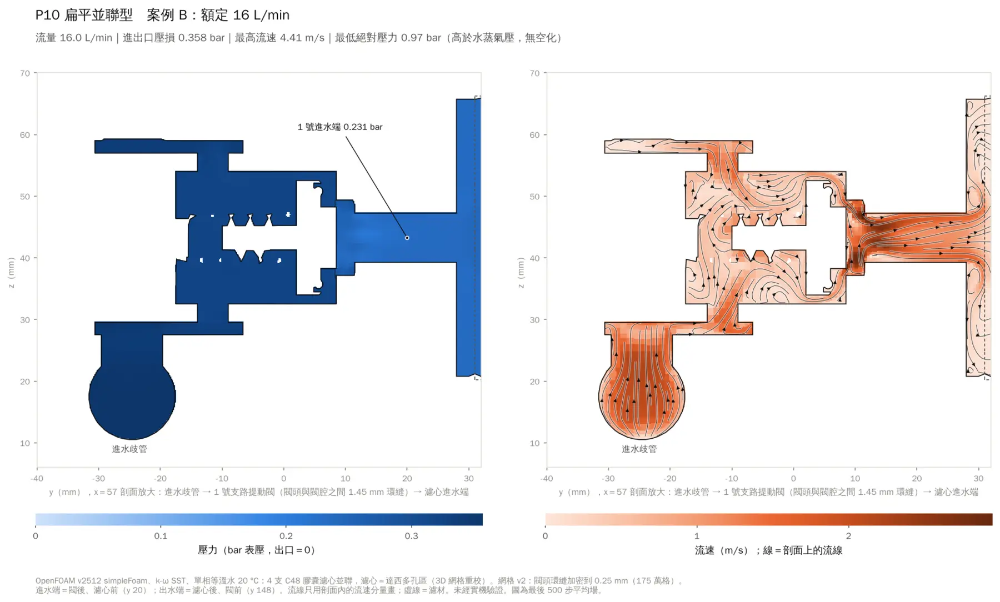
| 版本 | Rev B（2026-11-02）：提動閥城垛槽和徑向窗加大 |
|---|---|
| 濾心 | 膜淨 C48 膠囊 × 4（≤ 40 °C，只裝供水側） |
| 主材料 | 集管、滑套、閥芯、視窗 PPSU；扳把 POM-C；底盤 PP-GF30 |
| 額定流量 | 16 L/min（每支 4） |
| 手算乾淨壓損 | 0.228 bar（20 °C 水）／0.498 bar（10 °C PG25），Rev B 手算 |
| CFD 額定壓損 | 0.223 bar（20 °C 水、額定流量；Rev A 0.358） |
| 外形 W×D×H | 319 × 355 × 85.5 mm |
| 乾重 | 4.49 kg |
| 零件 | 客製 13 種 52 件／標準 15 種 90 件／外購 3 種 7 件 |
| 工程圖 | 16 張 |
| 強度手算 | 集管最低 SF 14（23 °C 強度）；扳把最大操作力 21.3 N |

10 款整機 CFD 總表
目前版本在額定流量時的壓損，以及進口 120 psi 直通大氣時的流量和空化。點款號跳到該款的流體圖。
| 款式 | 版本 | 額定流量 L/min | CFD 額定壓損 bar，接頭到接頭 | 濾心段 bar | 手算 bar | 120 psi 直通流量 L/min | 120 psi 空化 |
|---|---|---|---|---|---|---|---|
| P01卡口快換型 | Rev B | 10 | 0.123Rev A 0.164 | 0.101 | 0.122 | 164.2Rev A 107.4 | 平均場沒有；出水孔轉角在邊緣（Rev A 約 100 mm³） |
| P02免開殼膠囊型 | Rev A | 4 | 0.154不含止回閥芯、流量計 | 0.060 | 0.218 | 33.2 | 極小，約 0.2 mm³ |
| P03雙聯不停機型 | Rev B | 15 | 0.197 | 0.150 | 0.219 | 172.1 | 約 72 mm³（閥芯出水轉角） |
| P04頂開蓋型 | Rev B | 20 | 0.255 | 0.201 | 0.272 | 201.0 | 約 96 mm³（出水管入口） |
| P05衛生卡箍型 | Rev A | 20 | 0.208 | 0.198 | 0.221 | 395.9 | 約 1,830 mm³（橋管轉角） |
| P06機架抽屜型 | Rev B | 15 | 0.286Rev A 0.315 | 0.150 | 0.272 | 101.5Rev A | 沒有 |
| P07反洗延壽型 | Rev A | 10 | 0.163 | 0.101 | 0.152 | 104.8 | 約 2,670 mm³（出口轉角，最大） |
| P08槽內沉入型 | Rev A | 15 | 0.162液面到出口頸 | 0.151 | 0.164 | 不適用 | 不適用（吸入側） |
| P09面板模組型 | Rev A | 10 | 0.161 | 0.099 | 0.187 | 146.9 | 平均場沒有；三通 T2 接近汽化 |
| P10扁平並聯型 | Rev B | 16 | 0.223Rev A 0.358 | 0.057–0.068 | 0.228 | 79.1Rev A | 平均場沒有；出口接口在邊緣 |
目前版本 10 款的額定壓損都在共同規格 0.30 bar 目標以內；裕度最小的是 P06（約 0.014 bar）。P02 加選配 UQD04 兩對約 0.32 bar，會超過。濾心段佔整機壓損的 39–95 %：C10、DOE 這類大濾心幾乎只吃濾材的壓損，C48 膠囊款（P02、P10）的閥座和流道佔比較高。
CFD 找到、已經改掉的問題
- P01 Rev B：出水上行孔入口有一片殘料，擋住約 74 % 孔口 → 重切插座頂。額定 0.164 → 0.123 bar；120 psi 流量 107 → 164 L/min，出水孔的空化區消失。
- P03 Rev B：杯座插座凸台貼死杯壁，水到不了濾心 → 凸台縮到 R30，留 7 mm 環形通道（CFD 就是照這個通道算的）。
- P04 Rev B：切線進水通道外側有約 13 × 14 mm 的開口，實物會漏水 → 加 30 × 30 mm 橋接塊包住通道（CFD 本來就把這段當封閉流道算）。
- P06 Rev B：額定 0.315 bar，超過 0.30 bar 目標 → UQD08 指定 Cv ≥ 5.2、進口彎頭改大半徑；0.286 bar。
- P10 Rev B：額定 0.358 bar，超過目標 → 提動閥的城垛槽和徑向窗加大；0.223 bar。
還沒決定的改善項目
CFD 參數設定文件第 13 節列了其他可以改的地方。下面幾項都還沒改，改了之後的效果也還沒用 CFD 算過：
- 先確認：安裝處會不會接到超過 2.5 bar 的水源（例如自來水）。120 psi 已超過共同規格的最高操作壓力 2.5 bar、設計壓力 3.0 bar 和試壓 4.5 bar。會接到的話，建議在進口加減壓閥（≤ 2.5 bar）或安全閥，比逐款改流道直接；不會的話，下面 120 psi 的項目都可以等實機測試再決定。
- 只在 120 psi 出現的空化：P07 出口轉角（約 2,670 mm³，最優先）、P05 橋管轉角（約 1,830 mm³）、P04 出水管入口、P03 閥芯出水窗口、P09 三通 T2、P01 Rev B 出水孔內角。改法多半是轉角倒圓或加大斷面。
- P05：120 psi 時濾材頂端壓差約 5.4 bar，要先向膜淨確認 5 kg/cm² 的標示指的是壓差還是管路壓力。
- P02：兩個提動閥座比手算多約 0.05 bar；只有常用選配 UQD04 時才需要改。
CFD 怎麼算的
- OpenFOAM v2512，simpleFoam 穩態求解、k-ω SST 紊流模型；20 °C 水，單相、等溫。
- 流體域：從每款的 FreeCAD 模型抽出進口到出口的整個水路，切成約 100 萬格（P08 201 萬、P10 177 萬格），底格 4 mm、壁面加密 2 級、2 層邊界層。
- 濾心用達西多孔區代替濾材，係數照膜淨的流量和壓損資料校正（C10、CMG、C48 各一組）。模型只有線性項，所以只代表乾淨濾心、正常流量範圍。
- UQD 快接、浮子流量計等外購件用型錄 Cv 或設計說明的假設阻力代替內部形狀。
- 額定（案例 B）：進口給額定流量、出口 0 表壓，算 1,200 步，取最後 400 步平均。120 psi（案例 A）：進口總壓 8.27 bar 直通大氣，算 1,800 步，取最後 500 步平均。
- 空化：絕對壓力低於 20 °C 水蒸氣壓（約 0.023 bar）的地方畫成斜線區。單相模型不算汽泡本身，只標出可能汽化的位置。
- 沒有計入重力（P08 的錶讀值要另加液位高差），沒有做 FEM，全部未經實機驗證。
完整設定、校正過程和每款的數值在 CFD 參數設定文件（第 12 節是 10 款結果，第 13 節是改善建議清單）。下面兩張是正式算 10 款之前的樣板試跑。
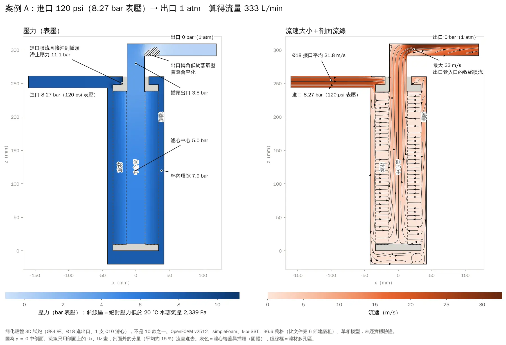
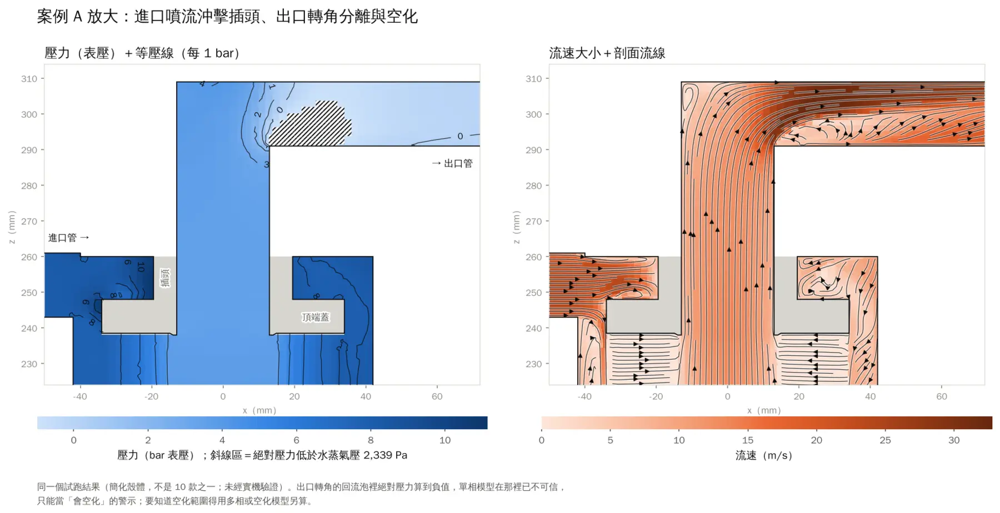